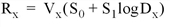
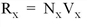
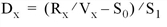
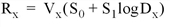
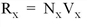
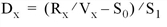

Coordinate Conversion
Linear
Logarithmic
Data to normal
Data to device


Normal to device


Normal to data

Device to data

Device to normal

Depending upon the data and type of visualization, you may want to convert between normalized, data or device coordinates. This section details two-dimensional and three-dimensional coordinate system characteristics and provides resources for various coordinate conversions. See the following for details:
This section describes the formulae for conversions to and from each coordinate system. In the following discussion, D x is a data coordinate, N x is a normalized coordinate, and R x is a raw device coordinate. Let V x and V y represent the size of the visible area of the currently selected display or drawing surface.
The field S is a two-element array of scaling factors used to convert X coordinates from data units to normalized units. S contains the parameters of the linear equation, converting data coordinates to normalized coordinates. S[0] is the intercept, and S[1] is the slope. Also, let D x be the data coordinate, N x the normalized coordinate, R x the device coordinate, V x the device X size (in device coordinates).
With the above variables defined, the linear two-dimensional coordinate conversions for the x coordinate can be written as follows:
|
Coordinate Conversion |
Linear |
Logarithmic |
|
Data to normal |
|
|
|
Data to device |
|
 |
|
Normal to device |
 |
|
|
Normal to data |
|
|
|
Device to data |
 |
|
|
Device to normal |
|
|
The y- and z -axis coordinates are converted in exactly the same manner, with the exception that there is no z device coordinate and that logarithmic z -axes are not permitted.
This coordinate conversion functionality is built into object graphics through the XCOORD_CONVERT and YCOORD_CONVERT properties or each type of visualization object. If you are working with a Direct Graphics display, you can use the CONVERT_COORD function.
To convert from a three-dimensional coordinate to a two-dimensional coordinate, IDL follows these steps:
How coordinate conversions are defined depend upon the display type as follows: